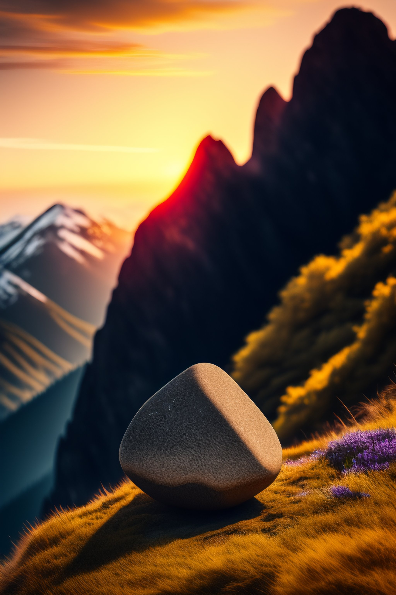

In primul rand trebuie sa ai un echipamnt adecvat nu te vei duce in slapi, sandale sau in papuci care nu iti dau siguranta de a termina treseul cu bine,indicat ar fi sa aveti incaltaminte corespunzatoare pentru drumeti. In al doilea rand, cand te vei duce pe munte trebuie sa fi matur pentru ca nu te poti duce pe munte si tu din distractie il impingi pe pritenul tau ,el cazand si se loveste asta nu da faptul ca esti matur,pe munte trebuie responsabilitate si maturitate. Trebuie sa respecti indrumarea Salvamontilor, daca e spun ca unule din trasee sunt inchise din cauza vremi trebui sa te supui.
Camparea este un lucru important la care sa te gandesti din timp daca vei vrea sa dormi acolo. Sa stii ca nu oriunde vei putea sa campezi pentru ca in zona muntoasa sunt animale salbatice periculoase si iti vor pune viata in dificultate asa ca incearca pe cat posibil sa campezi in refugi,locuri special amenajate pentru a dormi peste noapte sau in locuri in care riscul este scazut in caz ca vrei sa dormi cu cortul.